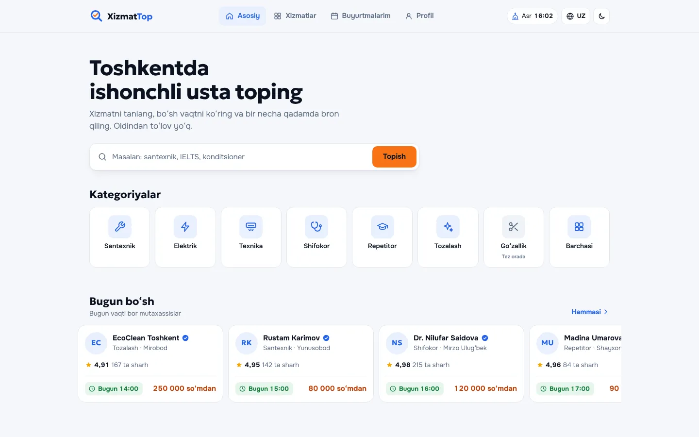
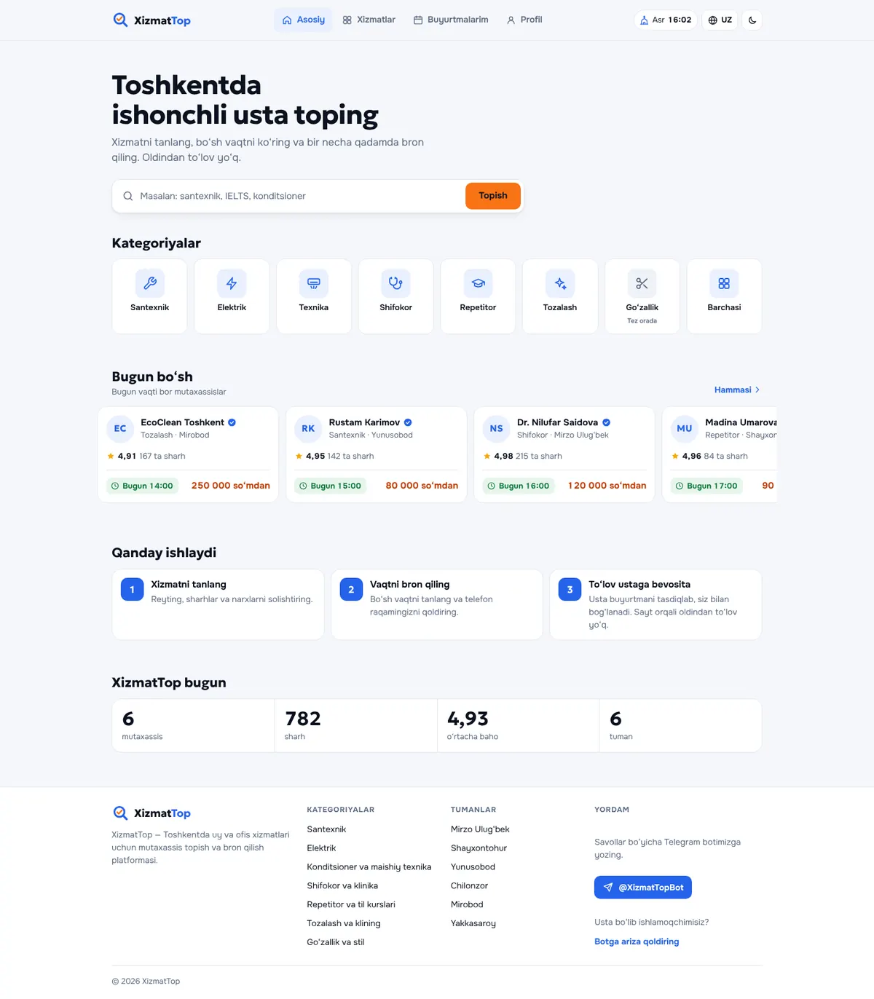
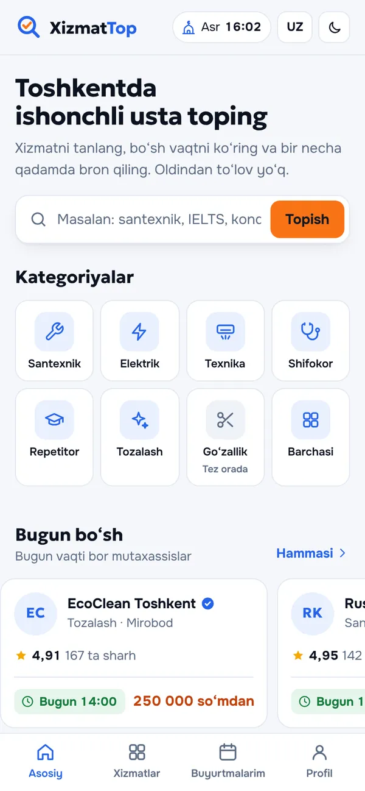
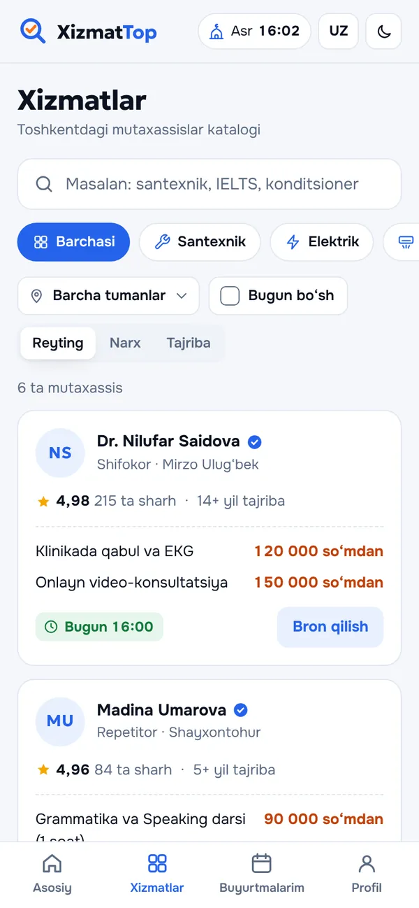

Usta chaqirish servisi · Toshkent
XizmatTop
Interfeysni qayta dizayn qildik: yettita urg‘u rangi o‘rniga bitta palitra, kunduzgi va tungi mavzu, saytda va Telegram Mini App’da ustaga oson yozilish.
- Hajm
- UI qayta dizayni
- Tillar
- 4
- Yil
- 2026

Vazifa
Toshkentda ustalarga yozilish servisi: santexniklar, elektriklar, texnika ta’miri, shifokorlar, repetitorlar, tozalash. Saytda va Telegram Mini App’da ishlaydi. Interfeys haddan tashqari yuklangan edi: yettita urg‘u rangi, fon rasmlari, ob-havo — bularning barchasi asosiy harakatga, ustaga yozilishga xalaqit berardi.
Nima qildik
- Bitta palitraKo‘k — navigatsiya uchun, to‘q sariq — ekrandagi bitta asosiy tugma uchun.
- Kunduzgi, tungi va avto mavzuMavzu Telegram va telefon sozlamalariga moslashadi.
- Interfeysning 4 tiliO‘zbek, rus, ingliz va xitoy tillari.
- Hozirgi saytni audit qilishKatalog chiqishi va hisoblagichlardagi xatolarni topib, yangi interfeysda tuzatdik.
- Mijoz dasturchisi uchun paketBosiladigan prototip, rang tokenlari, mavzu va tarjima lug‘atlari.
Qanday ko‘rinadi
Uzun ekran ustiga kursorni olib boring, u o‘zi aylanadi.Sayt kompyuter va telefonda shunday ko‘rinadi.



Shunday qayta dizayn kerakmi?
Bir soat ichida javob beramiz: vazifani aniqlashtiramiz, muddat va narxni aytamiz. Instagram sahifangiz yoki hozirgi saytingiz havolasini yuborsangiz kifoya.